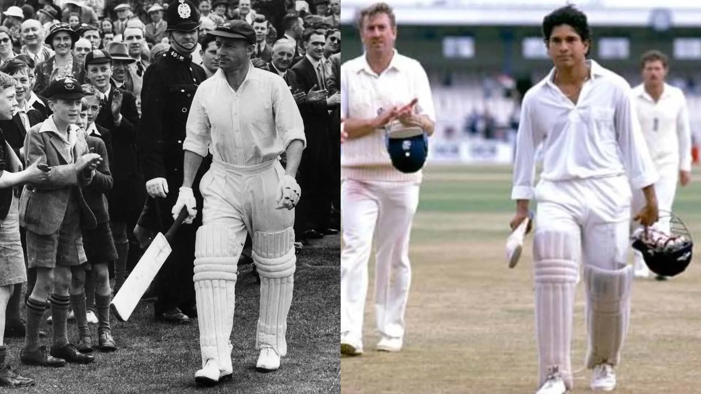

I am a Cricket addict
Cricket
Cricket is a bat-and-ball game that is played between two teams of eleven players on a field at the centre of which is a 22-yard (20-metre) pitch with a wicket at each end.

GOATS
Bradman once said, “I've only Tendulkar on the television and I was very very struck by his technique.” “I asked my wife to come and have a look at him because I never saw myself play but I feel this fellow is playing much the same as I used to play.”